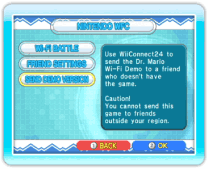
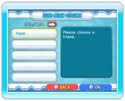
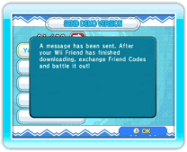
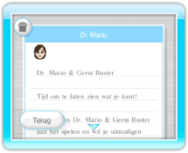

20 |
De demoversie versturen (Dr. Mario) |
 |
Je kunt een demoversie van het spel naar vrienden sturen, die Dr. Mario & Germ Buster niet hebben aangeschaft. Voordat je de demoversie verstuurt, moet je controleren of WiiConnect24 correct is ingesteld (zie ’WiiConnect24 gebruiken’). Opmerking: de demoversie kan alleen worden gebruikt om online vriendwedstrijden te spelen tegen spelers die de volledige versie van het spel bezitten. Als beide spelers alleen over de demoversie beschikken, kan het spel niet gespeeld worden. Je hebt je eigen vriendcode nodig om de demoversie te versturen. Je kunt je vriendcode bekijken door in het speltypekeuzescherm naar het Nintendo WFC-menu te gaan, voor FRIEND SETTINGS te kiezen en vervolgens voor CONFIRM FRIEND CODE te kiezen. ● De demoversie versturen 
Ga naar het speltypekeuzescherm en kies voor NINTENDO WFC om het Nintendo WFC-menu te openen. Kies hier voor SEND DEMO VERSION (demoversie versturen). 
Als je Wii-adresboek verschijnt, kun je de vriend kiezen aan wie je de demoversie wilt versturen. 
Nadat de demoversie is verzonden, verschijnt er een bevestiging in beeld. Opmerking: je kunt deze demoversie niet naar Wii-vrienden buiten je regio versturen. 
● De demoversie ontvangen Als de demoversie is verzonden, ontvangt je vriend een bericht op zijn Wii-prikbord. Na het bericht te hebben gelezen, kan je vriend ervoor kiezen om het downloadproces te starten. Als de download voltooid is, moet je vriend in het spel een vriendcode opvragen. Vervolgens moeten jullie elkaars vriendcodes registreren (zie ’Vriendinstellingen’). Om een wedstrijd te spelen tegen je vriend, ga je naar het Dr. Mario-menuscherm en kies je voor NINTENDO WFC om het Nintendo WFC-menuscherm te openen. Kies vervolgens voor WI-FI BATTLE en voor INVITE A FRIEND, en kies de vriend tegen wie je wilt spelen. Opmerking: alleen de speler met de volledige versie van Dr. Mario & Germ Buster kan een andere speler uitnodigen. Instellingen en resultaten worden niet opgeslagen. |
 |
 |